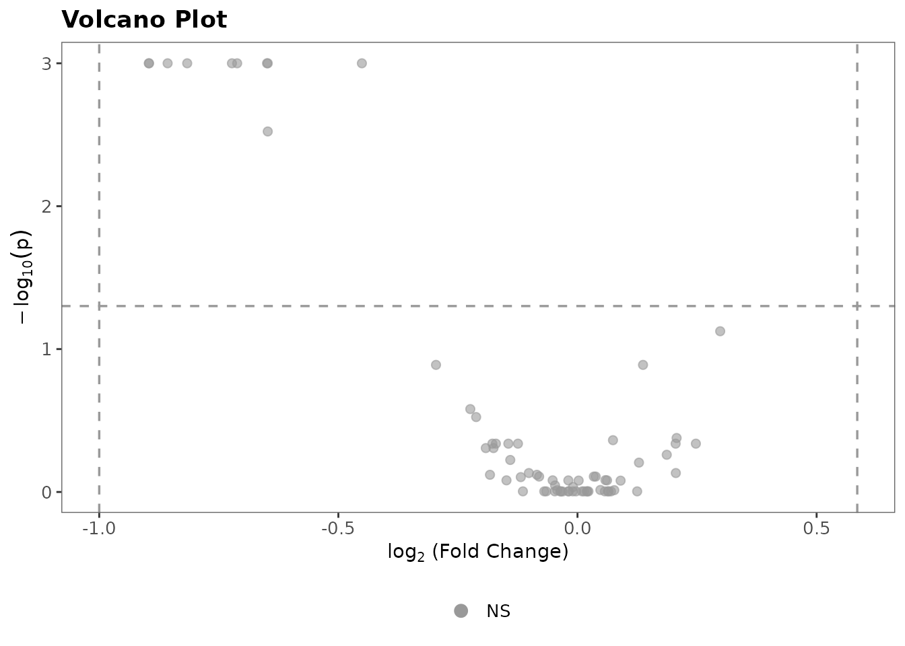
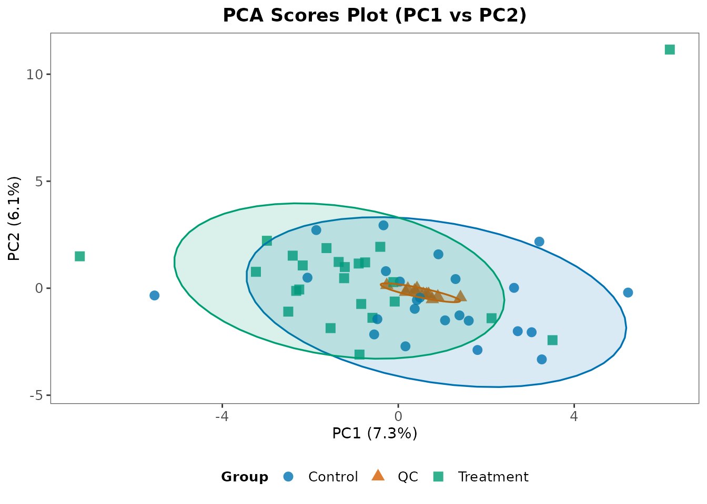
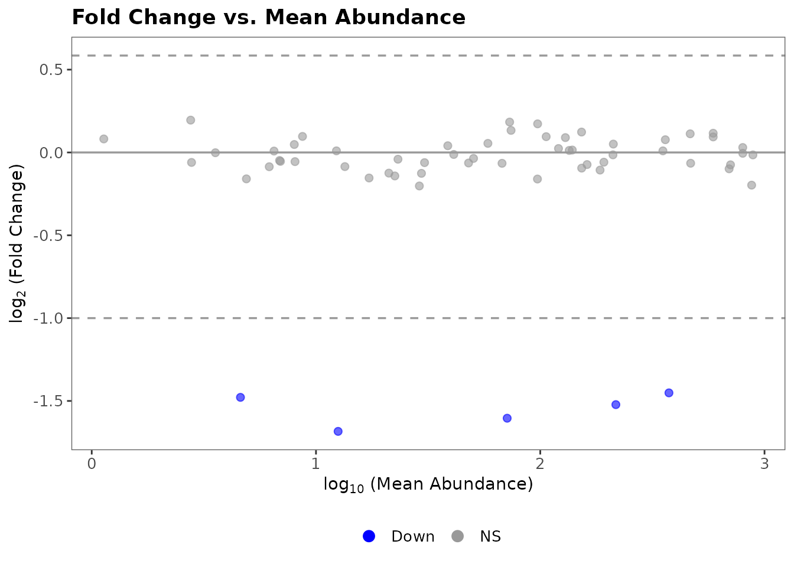
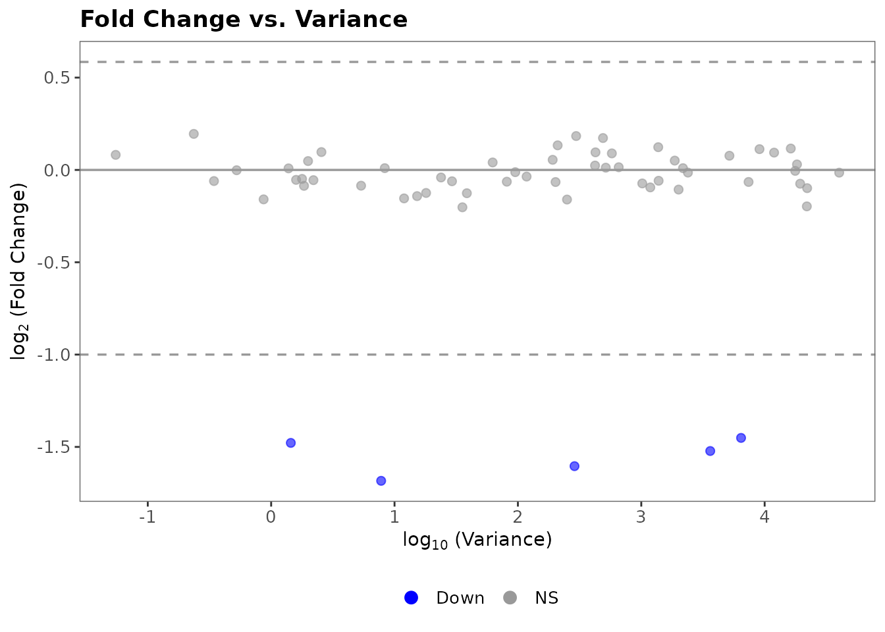
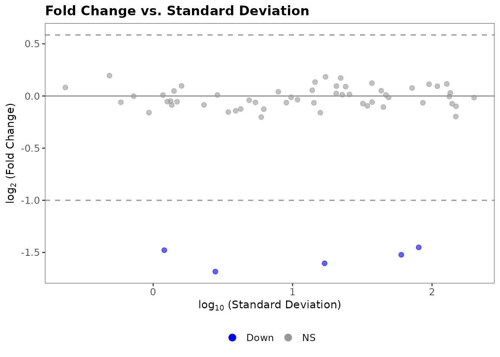
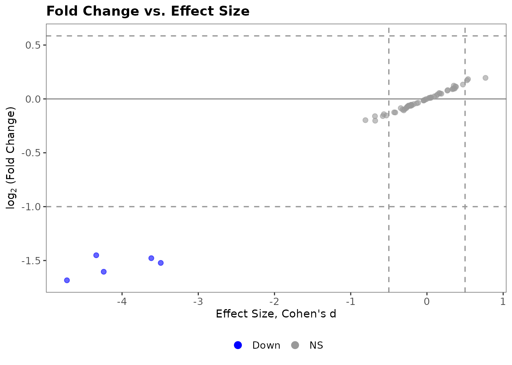
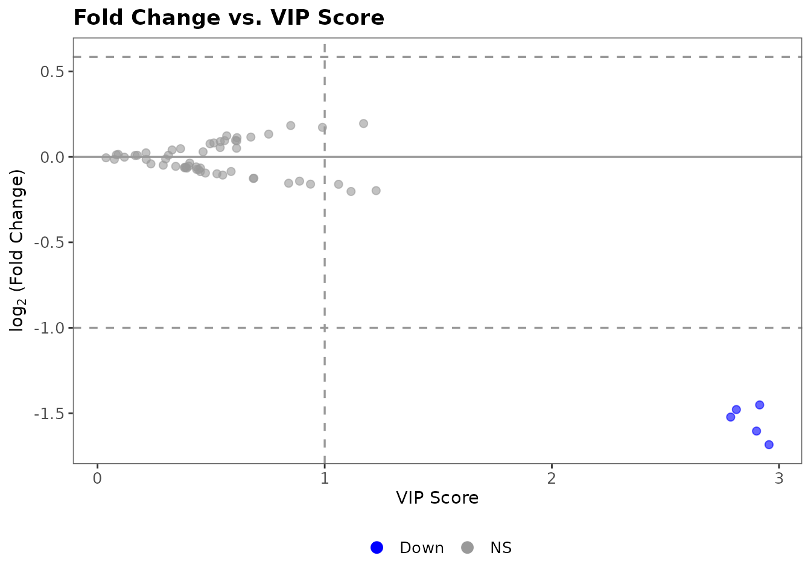
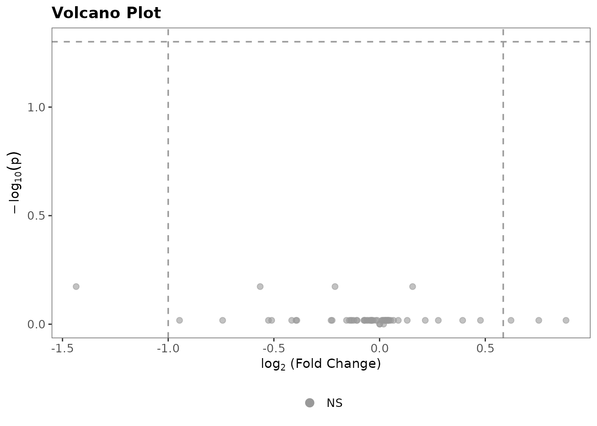
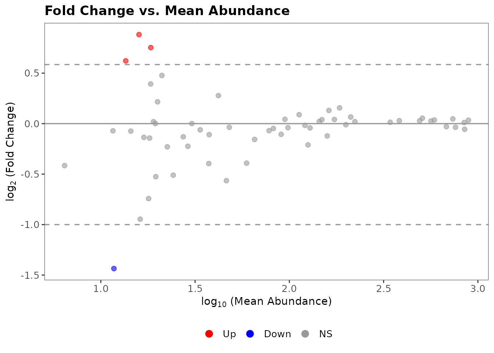

Tables and figures for reports
Every plot defaults to base_size = 11, which suits the 7
x 5 inch figures of a default Quarto or R Markdown document. Changing
base_size rescales all the text in a figure. Arguments such
as title_size and xlab_size override one
element.
Result tables already have report-ready column names, so they can be printed as they are.
res <- run_diff(iris, outcome = "Sepal.Length", group = "Species")
knitr::kable(res$data_summary[c("Group", "n", "Mean", "SD")], digits = 2)| Group | n | Mean | SD |
|---|---|---|---|
| setosa | 50 | 5.01 | 0.35 |
| versicolor | 50 | 5.94 | 0.52 |
| virginica | 50 | 6.59 | 0.64 |
knitr::kable(res$posthoc_result[c("Group 1", "Group 2", "Adjusted p-value", "Significance")],
digits = 3)| Group 1 | Group 2 | Adjusted p-value | Significance |
|---|---|---|---|
| setosa | versicolor | 0 | *** |
| setosa | virginica | 0 | *** |
| versicolor | virginica | 0 | *** |
Working with dimsprepr
pondeR accepts a dimsprepr::run_DIpreprocess() result
directly. The data, metadata, group column and QC samples are picked up
for you, and QC samples are left out of group comparisons.
di <- dimsprepr::run_DIpreprocess(dimsprepr::dims_data, dimsprepr::dims_metadata,
verbose = FALSE)
di_fc <- run_foldchange(di)
di_diff <- run_diff(di, summary_table = TRUE)
plot_volcano(list(di_fc, di_diff))$plots[[1]]
plot_score(run_pca(di))
Fold change against significance and against other metrics
plot_volcano() shows fold change against significance.
When nothing is significant, plot_fcmetric() still shows
how fold change relates to a per-feature metric. The simulated data
below have a few truly changed features and many low-intensity
features.
set.seed(2718)
n <- 40
meta <- data.frame(Group = factor(rep(c("A", "B"), each = n / 2)))
base <- 10^runif(60, 0, 3)
x <- as.data.frame(sapply(base, function(b) rnorm(n, b, 0.2 * b)))
colnames(x) <- paste0("feat_", seq_along(base))
x[meta$Group == "B", 1:5] <- x[meta$Group == "B", 1:5] * 3
fc <- run_foldchange(x, metadata = meta, group = "Group")
diff <- run_diff(x, metadata = meta, outcome = colnames(x), group = "Group",
test_type = "parametric", summary_table = TRUE, verbose = FALSE)Mean abundance (MA plot)
Large fold changes at low abundance are likely noise.
plot_fcmetric(fc)$plots[[1]]
Variance and standard deviation
Pooled within-group values for the two groups in each comparison.
plot_fcmetric(fc, metric = "variance")$plots[[1]]
plot_fcmetric(fc, metric = "sd")$plots[[1]]
Effect size
Needs a multi-outcome run_diff() result.
x_cut marks reference values.
plot_fcmetric(list(fc = fc, diff = diff), metric = "effect_size",
x_cut = c(-0.5, 0.5))$plots[[1]]
VIP score
Needs a run_pls() result (PLS-DA or OPLS-DA) and the
suggested package ropls.
pls <- run_pls(scale(x), metadata = meta, group = "Group", method = "plsda",
crossvalI = 5, permI = 0, verbose = FALSE)
plot_fcmetric(list(fc = fc, pls = pls), metric = "vip", x_cut = 1)$plots[[1]]
When nothing is significant
Here the groups do not differ, but measurement noise is roughly
constant, so low-abundance features still show large fold changes. The
volcano plot cannot tell these apart from real effects. It shows only
non-significant points. plot_fcmetric() shows that the
large fold changes sit at low abundance.
set.seed(5309)
x0 <- as.data.frame(sapply(base, function(b) pmax(rnorm(n, b, 30 + 0.05 * b), 0.5)))
colnames(x0) <- colnames(x)
fc0 <- run_foldchange(x0, metadata = meta, group = "Group")
diff0 <- run_diff(x0, metadata = meta, outcome = colnames(x0), group = "Group",
test_type = "parametric", summary_table = TRUE, verbose = FALSE)
plot_volcano(list(fc = fc0, diff = diff0))$plots[[1]]
plot_fcmetric(fc0)$plots[[1]]